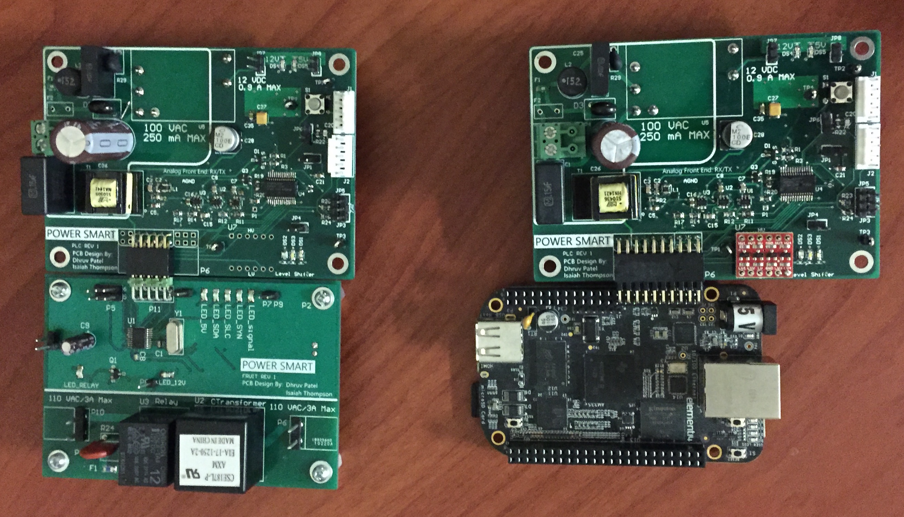
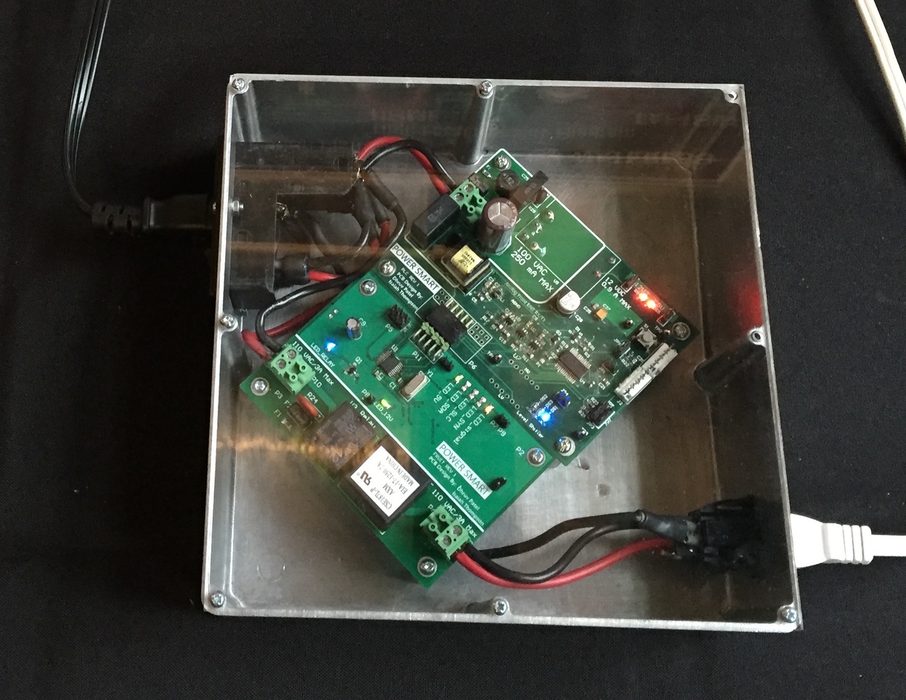

• Distinguished Capstone Design Project Award (Sponsored by Apple)
• Team Members: Dhruv Patel, William Mayo, Isaiah Thompson, Daniel Mak, Youngho Yoo
• Project Summary: Many current communication schemes use WiFi integrated systems for power management and control. However, WiFi may not be available in every part of the system, and not reliable at every point of the smart home. Another option is to use Powerline communication as a resource for home automation. Powerline infrastructure is a resource available in every household but is not used for internal communication. The goal of this project is to design a platform for communication and management, of any system that uses power inside a home, using the existing powerlines. Smart Home Powerline Communication Platform connects all appliances through the existing powerline infrastructure to a centralized hub. This solution consist of a module with integrated powerline protocol chips, microcontroller, and a centralized hub with embedded linux server as shown in image below.
 • I last did web development back in high school and yes it has been a long time since but finally I got myself a webpage at https://ece.uwaterlo.ca/~dr3patel.
• It was around the end of the first year of univeristy when I got my first arduino board, couple of 8X8 Led matrix, free samples of shif registers from Texas Instrument and built the 8X16 LED Matrix Disp.
Note: This is not a final project picutre as I couldn't find the better picture I had in my old laptop.
• Designed a simple clock with arduino and 7-segments displays.
• Functionality-wise, the clock was functioning correctly. However, after three days of continuously running this clock, I found that this clock was lagging by 6 seconds. I later found out that it was due to arduino processing overhead which utilizes certain clock cycles that are discounted in the actual timing. I then investigated that simply using FPGA counters with external oscillator was better way to design a clock with improved accuracy (it will still have clock jitter and skew). After all, you need atomic level precison to get a perfect precision clocking device!
• This was a key moment that got me started to think about oscillators, crystals, logic delay and clock distribution on chip in freshmen years.
• Used DC motors, PIC microcontroller and Infrared Sensor to detect black and white surface to make this little robot.
• Team Members: Dhruv Patel, Sahibdeep Singh Sodhi
• Received 5th Rank in Peel Region High-school robotic competition.
• Tore apart my old tape-recorder and took out the 7-segments display to make my Text-scrolling display with PIC microcontroller chip.
• I and my team member Sahibdeep, made a small prototype during highschool that opens up the combination lock using stepper motor.
• The stepper motor was driven by ULN200 driver IC and controlled by PIC-microcontroller.
No image available